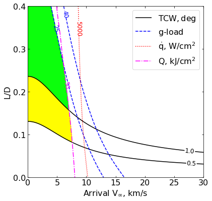
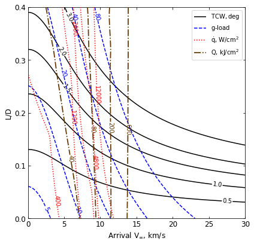

03 - a - Venus - Feasibility Charts - Lift¶
[1]:
from AMAT.planet import Planet
from AMAT.vehicle import Vehicle
import numpy as np
from scipy import interpolate
import matplotlib.pyplot as plt
from matplotlib import rcParams
from matplotlib.patches import Polygon
import os
[2]:
# Create a planet object
planet=Planet("VENUS")
planet.h_skip = 150000.0
# Load an nominal atmospheric profile with height, temp, pressure, density data
planet.loadAtmosphereModel('../atmdata/Venus/venus-gram-avg.dat', 0 , 1 ,2, 3 )
vinf_kms_array = np.linspace( 0.0, 30.0, 11)
LD_array = np.linspace( 0.0, 0.4 , 11)
[5]:
os.makedirs('../data/jsr-paper/venus/')
[3]:
#os.makedirs('../data/jsr-paper/venus/')
runID = 'venus-lift-'
num_total = len(vinf_kms_array)*len(LD_array)
count = 1
v0_kms_array = np.zeros(len(vinf_kms_array))
v0_kms_array[:] = np.sqrt(1.0*(vinf_kms_array[:]*1E3)**2.0 +\
2*np.ones(len(vinf_kms_array))*\
planet.GM/(planet.RP+150.0*1.0E3))/1.0E3
overShootLimit_array = np.zeros((len(v0_kms_array),len(LD_array)))
underShootLimit_array = np.zeros((len(v0_kms_array),len(LD_array)))
exitflag_os_array = np.zeros((len(v0_kms_array),len(LD_array)))
exitflag_us_array = np.zeros((len(v0_kms_array),len(LD_array)))
TCW_array = np.zeros((len(v0_kms_array),len(LD_array)))
[5]:
for i in range(0,len(v0_kms_array)):
for j in range(0,len(LD_array)):
vehicle=Vehicle('Apollo', 1000.0, 200.0, LD_array[j], 3.1416, 0.0, 1.00, planet)
vehicle.setInitialState(150.0,0.0,0.0,v0_kms_array[i],0.0,-4.5,0.0,0.0)
vehicle.setSolverParams(1E-6)
overShootLimit_array[i,j], exitflag_os_array[i,j] = vehicle.findOverShootLimit (2400.0, 0.1, -80.0, -4.0, 1E-10, 400.0)
underShootLimit_array[i,j], exitflag_us_array[i,j] = vehicle.findUnderShootLimit(2400.0, 0.1, -80.0, -4.0, 1E-10, 400.0)
TCW_array[i,j] = overShootLimit_array[i,j] - underShootLimit_array[i,j]
print("Run #"+str(count)+" of "+ str(num_total)+": Arrival V_infty: "+str(vinf_kms_array[i])+" km/s"+", L/D:"+str(LD_array[j]) + " OSL: "+str(overShootLimit_array[i,j])+" USL: "+str(underShootLimit_array[i,j])+", TCW: "+str(TCW_array[i,j])+" EFOS: "+str(exitflag_os_array[i,j])+ " EFUS: "+str(exitflag_us_array[i,j]))
count = count +1
np.savetxt('../data/jsr-paper/venus/'+runID+'vinf_kms_array.txt',vinf_kms_array)
np.savetxt('../data/jsr-paper/venus/'+runID+'v0_kms_array.txt',v0_kms_array)
np.savetxt('../data/jsr-paper/venus/'+runID+'LD_array.txt',LD_array)
np.savetxt('../data/jsr-paper/venus/'+runID+'overShootLimit_array.txt',overShootLimit_array)
np.savetxt('../data/jsr-paper/venus/'+runID+'exitflag_os_array.txt',exitflag_os_array)
np.savetxt('../data/jsr-paper/venus/'+runID+'undershootLimit_array.txt',underShootLimit_array)
np.savetxt('../data/jsr-paper/venus/'+runID+'exitflag_us_array.txt',exitflag_us_array)
np.savetxt('../data/jsr-paper/venus/'+runID+'TCW_array.txt',TCW_array)
Run #1 of 121: Arrival V_infty: 0.0 km/s, L/D:0.0 OSL: -5.28917362388529 USL: -5.28917362388529, TCW: 0.0 EFOS: 1.0 EFUS: 1.0
Run #2 of 121: Arrival V_infty: 0.0 km/s, L/D:0.04 OSL: -5.223180380049598 USL: -5.368784863090696, TCW: 0.1456044830410974 EFOS: 1.0 EFUS: 1.0
Run #3 of 121: Arrival V_infty: 0.0 km/s, L/D:0.08 OSL: -5.168305009490723 USL: -5.464261669003463, TCW: 0.29595665951273986 EFOS: 1.0 EFUS: 1.0
Run #4 of 121: Arrival V_infty: 0.0 km/s, L/D:0.12 OSL: -5.122275314366561 USL: -5.577681569338893, TCW: 0.4554062549723312 EFOS: 1.0 EFUS: 1.0
Run #5 of 121: Arrival V_infty: 0.0 km/s, L/D:0.16 OSL: -5.083234555928357 USL: -5.7107660786750785, TCW: 0.6275315227467217 EFOS: 1.0 EFUS: 1.0
Run #6 of 121: Arrival V_infty: 0.0 km/s, L/D:0.2 OSL: -5.049723691030522 USL: -5.865200547999848, TCW: 0.815476856969326 EFOS: 1.0 EFUS: 1.0
Run #7 of 121: Arrival V_infty: 0.0 km/s, L/D:0.24 OSL: -5.020491608600423 USL: -6.042333190958743, TCW: 1.02184158235832 EFOS: 1.0 EFUS: 1.0
Run #8 of 121: Arrival V_infty: 0.0 km/s, L/D:0.28 OSL: -4.994692716834834 USL: -6.243589387097018, TCW: 1.2488966702621838 EFOS: 1.0 EFUS: 1.0
Run #9 of 121: Arrival V_infty: 0.0 km/s, L/D:0.32 OSL: -4.971297524054535 USL: -6.470216338937462, TCW: 1.498918814882927 EFOS: 1.0 EFUS: 1.0
Run #10 of 121: Arrival V_infty: 0.0 km/s, L/D:0.36 OSL: -4.950400410962175 USL: -6.724177106687421, TCW: 1.773776695725246 EFOS: 1.0 EFUS: 1.0
Run #11 of 121: Arrival V_infty: 0.0 km/s, L/D:0.4 OSL: -4.93136119931296 USL: -7.007411795340886, TCW: 2.076050596027926 EFOS: 1.0 EFUS: 1.0
Run #12 of 121: Arrival V_infty: 3.0 km/s, L/D:0.0 OSL: -5.525214372559276 USL: -5.525214372559276, TCW: 0.0 EFOS: 1.0 EFUS: 1.0
Run #13 of 121: Arrival V_infty: 3.0 km/s, L/D:0.04 OSL: -5.452068351525668 USL: -5.614722189915483, TCW: 0.16265383838981506 EFOS: 1.0 EFUS: 1.0
Run #14 of 121: Arrival V_infty: 3.0 km/s, L/D:0.08 OSL: -5.392200719772518 USL: -5.723494066845888, TCW: 0.33129334707336966 EFOS: 1.0 EFUS: 1.0
Run #15 of 121: Arrival V_infty: 3.0 km/s, L/D:0.12 OSL: -5.342597756301984 USL: -5.854171760642203, TCW: 0.5115740043402184 EFOS: 1.0 EFUS: 1.0
Run #16 of 121: Arrival V_infty: 3.0 km/s, L/D:0.16 OSL: -5.300863761363871 USL: -6.009102295280172, TCW: 0.7082385339163011 EFOS: 1.0 EFUS: 1.0
Run #17 of 121: Arrival V_infty: 3.0 km/s, L/D:0.2 OSL: -5.265195267948002 USL: -6.190187436837732, TCW: 0.9249921688897302 EFOS: 1.0 EFUS: 1.0
Run #18 of 121: Arrival V_infty: 3.0 km/s, L/D:0.24 OSL: -5.234272582878475 USL: -6.398867800573498, TCW: 1.1645952176950232 EFOS: 1.0 EFUS: 1.0
Run #19 of 121: Arrival V_infty: 3.0 km/s, L/D:0.28 OSL: -5.20702197762148 USL: -6.636934366404603, TCW: 1.4299123887831229 EFOS: 1.0 EFUS: 1.0
Run #20 of 121: Arrival V_infty: 3.0 km/s, L/D:0.32 OSL: -5.182672775259562 USL: -6.906344182410976, TCW: 1.7236714071514143 EFOS: 1.0 EFUS: 1.0
Run #21 of 121: Arrival V_infty: 3.0 km/s, L/D:0.36 OSL: -5.1606888012902346 USL: -7.209281045856187, TCW: 2.0485922445659526 EFOS: 1.0 EFUS: 1.0
Run #22 of 121: Arrival V_infty: 3.0 km/s, L/D:0.4 OSL: -5.140685431280872 USL: -7.5485165899881395, TCW: 2.4078311587072676 EFOS: 1.0 EFUS: 1.0
Run #23 of 121: Arrival V_infty: 6.0 km/s, L/D:0.0 OSL: -6.031109568619286 USL: -6.031109568619286, TCW: 0.0 EFOS: 1.0 EFUS: 1.0
Run #24 of 121: Arrival V_infty: 6.0 km/s, L/D:0.04 OSL: -5.9399892451074265 USL: -6.14672837481703, TCW: 0.20673912970960373 EFOS: 1.0 EFUS: 1.0
Run #25 of 121: Arrival V_infty: 6.0 km/s, L/D:0.08 OSL: -5.867892169611878 USL: -6.292284148836188, TCW: 0.4243919792243105 EFOS: 1.0 EFUS: 1.0
Run #26 of 121: Arrival V_infty: 6.0 km/s, L/D:0.12 OSL: -5.80999375527972 USL: -6.471950098199159, TCW: 0.6619563429194386 EFOS: 1.0 EFUS: 1.0
Run #27 of 121: Arrival V_infty: 6.0 km/s, L/D:0.16 OSL: -5.762384801419103 USL: -6.689024811908894, TCW: 0.9266400104897912 EFOS: 1.0 EFUS: 1.0
Run #28 of 121: Arrival V_infty: 6.0 km/s, L/D:0.2 OSL: -5.722174212132813 USL: -6.946523390146467, TCW: 1.2243491780136537 EFOS: 1.0 EFUS: 1.0
Run #29 of 121: Arrival V_infty: 6.0 km/s, L/D:0.24 OSL: -5.6875159164155775 USL: -7.246720199789706, TCW: 1.5592042833741289 EFOS: 1.0 EFUS: 1.0
Run #30 of 121: Arrival V_infty: 6.0 km/s, L/D:0.28 OSL: -5.657245556536509 USL: -7.591965481802617, TCW: 1.9347199252661085 EFOS: 1.0 EFUS: 1.0
Run #31 of 121: Arrival V_infty: 6.0 km/s, L/D:0.32 OSL: -5.63029875756547 USL: -7.985468020266126, TCW: 2.355169262700656 EFOS: 1.0 EFUS: 1.0
Run #32 of 121: Arrival V_infty: 6.0 km/s, L/D:0.36 OSL: -5.606070143428951 USL: -8.43156385106704, TCW: 2.8254937076380884 EFOS: 1.0 EFUS: 1.0
Run #33 of 121: Arrival V_infty: 6.0 km/s, L/D:0.4 OSL: -5.584077247451205 USL: -8.93518914508968, TCW: 3.351111897638475 EFOS: 1.0 EFUS: 1.0
Run #34 of 121: Arrival V_infty: 9.0 km/s, L/D:0.0 OSL: -6.5252751870393695 USL: -6.5252751870393695, TCW: 0.0 EFOS: 1.0 EFUS: 1.0
Run #35 of 121: Arrival V_infty: 9.0 km/s, L/D:0.04 OSL: -6.411286181497417 USL: -6.67701773621593, TCW: 0.2657315547185135 EFOS: 1.0 EFUS: 1.0
Run #36 of 121: Arrival V_infty: 9.0 km/s, L/D:0.08 OSL: -6.325130739631277 USL: -6.875370672438294, TCW: 0.5502399328070169 EFOS: 1.0 EFUS: 1.0
Run #37 of 121: Arrival V_infty: 9.0 km/s, L/D:0.12 OSL: -6.258156687563314 USL: -7.12777092923352, TCW: 0.869614241670206 EFOS: 1.0 EFUS: 1.0
Run #38 of 121: Arrival V_infty: 9.0 km/s, L/D:0.16 OSL: -6.204294505801954 USL: -7.438715654770931, TCW: 1.234421148968977 EFOS: 1.0 EFUS: 1.0
Run #39 of 121: Arrival V_infty: 9.0 km/s, L/D:0.2 OSL: -6.15959366502284 USL: -7.811892046585854, TCW: 1.6522983815630141 EFOS: 1.0 EFUS: 1.0
Run #40 of 121: Arrival V_infty: 9.0 km/s, L/D:0.24 OSL: -6.121408825361868 USL: -8.251130665452365, TCW: 2.1297218400904967 EFOS: 1.0 EFUS: 1.0
Run #41 of 121: Arrival V_infty: 9.0 km/s, L/D:0.28 OSL: -6.0880752557714 USL: -8.759927878207236, TCW: 2.6718526224358357 EFOS: 1.0 EFUS: 1.0
Run #42 of 121: Arrival V_infty: 9.0 km/s, L/D:0.32 OSL: -6.058570795124979 USL: -9.34374268555257, TCW: 3.2851718904275913 EFOS: 1.0 EFUS: 1.0
Run #43 of 121: Arrival V_infty: 9.0 km/s, L/D:0.36 OSL: -6.032128062015545 USL: -10.009327579511591, TCW: 3.9771995174960466 EFOS: 1.0 EFUS: 1.0
Run #44 of 121: Arrival V_infty: 9.0 km/s, L/D:0.4 OSL: -6.008162740890839 USL: -10.76598429643127, TCW: 4.757821555540431 EFOS: 1.0 EFUS: 1.0
Run #45 of 121: Arrival V_infty: 12.0 km/s, L/D:0.0 OSL: -6.9077821324099205 USL: -6.9077821324099205, TCW: 0.0 EFOS: 1.0 EFUS: 1.0
Run #46 of 121: Arrival V_infty: 12.0 km/s, L/D:0.04 OSL: -6.770195584551402 USL: -7.099520060641225, TCW: 0.3293244760898233 EFOS: 1.0 EFUS: 1.0
Run #47 of 121: Arrival V_infty: 12.0 km/s, L/D:0.08 OSL: -6.670784740414092 USL: -7.3602576326920826, TCW: 0.6894728922779905 EFOS: 1.0 EFUS: 1.0
Run #48 of 121: Arrival V_infty: 12.0 km/s, L/D:0.12 OSL: -6.5960763708280865 USL: -7.6997127155191265, TCW: 1.10363634469104 EFOS: 1.0 EFUS: 1.0
Run #49 of 121: Arrival V_infty: 12.0 km/s, L/D:0.16 OSL: -6.5371295324112 USL: -8.124731599913503, TCW: 1.5876020675023028 EFOS: 1.0 EFUS: 1.0
Run #50 of 121: Arrival V_infty: 12.0 km/s, L/D:0.2 OSL: -6.488747710962343 USL: -8.63891193458403, TCW: 2.1501642236216867 EFOS: 1.0 EFUS: 1.0
Run #51 of 121: Arrival V_infty: 12.0 km/s, L/D:0.24 OSL: -6.447817531356122 USL: -9.246746800447, TCW: 2.798929269090877 EFOS: 1.0 EFUS: 1.0
Run #52 of 121: Arrival V_infty: 12.0 km/s, L/D:0.28 OSL: -6.412318241527828 USL: -9.95384414529326, TCW: 3.5415259037654323 EFOS: 1.0 EFUS: 1.0
Run #53 of 121: Arrival V_infty: 12.0 km/s, L/D:0.32 OSL: -6.380967251185211 USL: -10.767532934300107, TCW: 4.386565683114895 EFOS: 1.0 EFUS: 1.0
Run #54 of 121: Arrival V_infty: 12.0 km/s, L/D:0.36 OSL: -6.352895294101472 USL: -11.698868351119017, TCW: 5.345973057017545 EFOS: 1.0 EFUS: 1.0
Run #55 of 121: Arrival V_infty: 12.0 km/s, L/D:0.4 OSL: -6.327470967709814 USL: -12.761079232863267, TCW: 6.4336082651534525 EFOS: 1.0 EFUS: 1.0
Run #56 of 121: Arrival V_infty: 15.0 km/s, L/D:0.0 OSL: -7.1839253404141346 USL: -7.1839253404141346, TCW: 0.0 EFOS: 1.0 EFUS: 1.0
Run #57 of 121: Arrival V_infty: 15.0 km/s, L/D:0.04 OSL: -7.024387272489548 USL: -7.4167858334949415, TCW: 0.3923985610053933 EFOS: 1.0 EFUS: 1.0
Run #58 of 121: Arrival V_infty: 15.0 km/s, L/D:0.08 OSL: -6.913558371936233 USL: -7.743644119283999, TCW: 0.8300857473477663 EFOS: 1.0 EFUS: 1.0
Run #59 of 121: Arrival V_infty: 15.0 km/s, L/D:0.12 OSL: -6.832731046193658 USL: -8.178221938724164, TCW: 1.3454908925305062 EFOS: 1.0 EFUS: 1.0
Run #60 of 121: Arrival V_infty: 15.0 km/s, L/D:0.16 OSL: -6.770015456571855 USL: -8.726872230661684, TCW: 1.9568567740898288 EFOS: 1.0 EFUS: 1.0
Run #61 of 121: Arrival V_infty: 15.0 km/s, L/D:0.2 OSL: -6.718982014248468 USL: -9.394022465585294, TCW: 2.6750404513368267 EFOS: 1.0 EFUS: 1.0
Run #62 of 121: Arrival V_infty: 15.0 km/s, L/D:0.24 OSL: -6.676023360243562 USL: -10.184189914689341, TCW: 3.508166554445779 EFOS: 1.0 EFUS: 1.0
Run #63 of 121: Arrival V_infty: 15.0 km/s, L/D:0.28 OSL: -6.638962044868094 USL: -11.104387398452673, TCW: 4.465425353584578 EFOS: 1.0 EFUS: 1.0
Run #64 of 121: Arrival V_infty: 15.0 km/s, L/D:0.32 OSL: -6.606280709573184 USL: -12.164579410935403, TCW: 5.558298701362219 EFOS: 1.0 EFUS: 1.0
Run #65 of 121: Arrival V_infty: 15.0 km/s, L/D:0.36 OSL: -6.577066828795068 USL: -13.377196716610342, TCW: 6.800129887815274 EFOS: 1.0 EFUS: 1.0
Run #66 of 121: Arrival V_infty: 15.0 km/s, L/D:0.4 OSL: -6.55066118094328 USL: -14.758410460264713, TCW: 8.207749279321433 EFOS: 1.0 EFUS: 1.0
Run #67 of 121: Arrival V_infty: 18.0 km/s, L/D:0.0 OSL: -7.382378110825812 USL: -7.382378110825812, TCW: 0.0 EFOS: 1.0 EFUS: 1.0
Run #68 of 121: Arrival V_infty: 18.0 km/s, L/D:0.04 OSL: -7.20258363213361 USL: -7.654947697479656, TCW: 0.4523640653460461 EFOS: 1.0 EFUS: 1.0
Run #69 of 121: Arrival V_infty: 18.0 km/s, L/D:0.08 OSL: -7.08250201087867 USL: -8.049527817453054, TCW: 0.9670258065743838 EFOS: 1.0 EFUS: 1.0
Run #70 of 121: Arrival V_infty: 18.0 km/s, L/D:0.12 OSL: -6.9968952902599995 USL: -8.581186411407543, TCW: 1.584291121147544 EFOS: 1.0 EFUS: 1.0
Run #71 of 121: Arrival V_infty: 18.0 km/s, L/D:0.16 OSL: -6.931437398241542 USL: -9.256865785147966, TCW: 2.325428386906424 EFOS: 1.0 EFUS: 1.0
Run #72 of 121: Arrival V_infty: 18.0 km/s, L/D:0.2 OSL: -6.878532880382409 USL: -10.07969889117885, TCW: 3.2011660107964417 EFOS: 1.0 EFUS: 1.0
Run #73 of 121: Arrival V_infty: 18.0 km/s, L/D:0.24 OSL: -6.8341101330006495 USL: -11.054993435882352, TCW: 4.2208833028817025 EFOS: 1.0 EFUS: 1.0
Run #74 of 121: Arrival V_infty: 18.0 km/s, L/D:0.28 OSL: -6.795904518221505 USL: -12.189666902046156, TCW: 5.393762383824651 EFOS: 1.0 EFUS: 1.0
Run #75 of 121: Arrival V_infty: 18.0 km/s, L/D:0.32 OSL: -6.762315713192947 USL: -13.494760629164375, TCW: 6.732444915971428 EFOS: 1.0 EFUS: 1.0
Run #76 of 121: Arrival V_infty: 18.0 km/s, L/D:0.36 OSL: -6.732321575105743 USL: -14.984018061048118, TCW: 8.251696485942375 EFOS: 1.0 EFUS: 1.0
Run #77 of 121: Arrival V_infty: 18.0 km/s, L/D:0.4 OSL: -6.705189572003292 USL: -16.67107700573615, TCW: 9.96588743373286 EFOS: 1.0 EFUS: 1.0
Run #78 of 121: Arrival V_infty: 21.0 km/s, L/D:0.0 OSL: -7.527110283248476 USL: -7.527110283248476, TCW: 0.0 EFOS: 1.0 EFUS: 1.0
Run #79 of 121: Arrival V_infty: 21.0 km/s, L/D:0.04 OSL: -7.329295575476863 USL: -7.838286515263462, TCW: 0.5089909397865995 EFOS: 1.0 EFUS: 1.0
Run #80 of 121: Arrival V_infty: 21.0 km/s, L/D:0.08 OSL: -7.201704088492988 USL: -8.299273725559033, TCW: 1.0975696370660444 EFOS: 1.0 EFUS: 1.0
Run #81 of 121: Arrival V_infty: 21.0 km/s, L/D:0.12 OSL: -7.112427247175219 USL: -8.9279177691933, TCW: 1.8154905220180808 EFOS: 1.0 EFUS: 1.0
Run #82 of 121: Arrival V_infty: 21.0 km/s, L/D:0.16 OSL: -7.044902717203513 USL: -9.729173737083329, TCW: 2.684271019879816 EFOS: 1.0 EFUS: 1.0
Run #83 of 121: Arrival V_infty: 21.0 km/s, L/D:0.2 OSL: -6.990601299556147 USL: -10.705995861691918, TCW: 3.7153945621357707 EFOS: 1.0 EFUS: 1.0
Run #84 of 121: Arrival V_infty: 21.0 km/s, L/D:0.24 OSL: -6.945201598991844 USL: -11.861729237862164, TCW: 4.9165276388703205 EFOS: 1.0 EFUS: 1.0
Run #85 of 121: Arrival V_infty: 21.0 km/s, L/D:0.28 OSL: -6.906171003847703 USL: -13.204209437404643, TCW: 6.29803843355694 EFOS: 1.0 EFUS: 1.0
Run #86 of 121: Arrival V_infty: 21.0 km/s, L/D:0.32 OSL: -6.871916038940981 USL: -14.743655170688726, TCW: 7.871739131747745 EFOS: 1.0 EFUS: 1.0
Run #87 of 121: Arrival V_infty: 21.0 km/s, L/D:0.36 OSL: -6.8413654634932755 USL: -16.4922250835225, TCW: 9.650859620029223 EFOS: 1.0 EFUS: 1.0
Run #88 of 121: Arrival V_infty: 21.0 km/s, L/D:0.4 OSL: -6.813757385320059 USL: -18.45940128907023, TCW: 11.64564390375017 EFOS: 1.0 EFUS: 1.0
Run #89 of 121: Arrival V_infty: 24.0 km/s, L/D:0.0 OSL: -7.635204620051809 USL: -7.635204620051809, TCW: 0.0 EFOS: 1.0 EFUS: 1.0
Run #90 of 121: Arrival V_infty: 24.0 km/s, L/D:0.04 OSL: -7.42147440957342 USL: -7.983169202660065, TCW: 0.5616947930866445 EFOS: 1.0 EFUS: 1.0
Run #91 of 121: Arrival V_infty: 24.0 km/s, L/D:0.08 OSL: -7.2876336052431725 USL: -8.509109574577451, TCW: 1.2214759693342785 EFOS: 1.0 EFUS: 1.0
Run #92 of 121: Arrival V_infty: 24.0 km/s, L/D:0.12 OSL: -7.195545198301261 USL: -9.23215636000532, TCW: 2.0366111617040588 EFOS: 1.0 EFUS: 1.0
Run #93 of 121: Arrival V_infty: 24.0 km/s, L/D:0.16 OSL: -7.1264770285743 USL: -10.156276278827136, TCW: 3.029799250252836 EFOS: 1.0 EFUS: 1.0
Run #94 of 121: Arrival V_infty: 24.0 km/s, L/D:0.2 OSL: -7.07118127711874 USL: -11.281281417552236, TCW: 4.210100140433497 EFOS: 1.0 EFUS: 1.0
Run #95 of 121: Arrival V_infty: 24.0 km/s, L/D:0.24 OSL: -7.025021565721545 USL: -12.610175601246738, TCW: 5.585154035525193 EFOS: 1.0 EFUS: 1.0
Run #96 of 121: Arrival V_infty: 24.0 km/s, L/D:0.28 OSL: -6.985417478776071 USL: -14.149251704162452, TCW: 7.163834225386381 EFOS: 1.0 EFUS: 1.0
Run #97 of 121: Arrival V_infty: 24.0 km/s, L/D:0.32 OSL: -6.950687272266805 USL: -15.907775679985207, TCW: 8.957088407718402 EFOS: 1.0 EFUS: 1.0
Run #98 of 121: Arrival V_infty: 24.0 km/s, L/D:0.36 OSL: -6.919730005040037 USL: -17.89427540468023, TCW: 10.974545399640192 EFOS: 1.0 EFUS: 1.0
Run #99 of 121: Arrival V_infty: 24.0 km/s, L/D:0.4 OSL: -6.891788325854577 USL: -20.112015082988364, TCW: 13.220226757133787 EFOS: 1.0 EFUS: 1.0
Run #100 of 121: Arrival V_infty: 27.0 km/s, L/D:0.0 OSL: -7.71808632351167 USL: -7.71808632351167, TCW: 0.0 EFOS: 1.0 EFUS: 1.0
Run #101 of 121: Arrival V_infty: 27.0 km/s, L/D:0.04 OSL: -7.49009803701847 USL: -8.100727698638366, TCW: 0.6106296616198961 EFOS: 1.0 EFUS: 1.0
Run #102 of 121: Arrival V_infty: 27.0 km/s, L/D:0.08 OSL: -7.35102653910144 USL: -8.689636547485861, TCW: 1.3386100083844212 EFOS: 1.0 EFUS: 1.0
Run #103 of 121: Arrival V_infty: 27.0 km/s, L/D:0.12 OSL: -7.256783246040868 USL: -9.504313935143728, TCW: 2.2475306891028595 EFOS: 1.0 EFUS: 1.0
Run #104 of 121: Arrival V_infty: 27.0 km/s, L/D:0.16 OSL: -7.186538503068732 USL: -10.54647930261126, TCW: 3.359940799542528 EFOS: 1.0 EFUS: 1.0
Run #105 of 121: Arrival V_infty: 27.0 km/s, L/D:0.2 OSL: -7.130489625636983 USL: -11.813168006123306, TCW: 4.682678380486323 EFOS: 1.0 EFUS: 1.0
Run #106 of 121: Arrival V_infty: 27.0 km/s, L/D:0.24 OSL: -7.083774343042023 USL: -13.30581801828157, TCW: 6.222043675239547 EFOS: 1.0 EFUS: 1.0
Run #107 of 121: Arrival V_infty: 27.0 km/s, L/D:0.28 OSL: -7.043729467670346 USL: -15.029293540632352, TCW: 7.985564072962006 EFOS: 1.0 EFUS: 1.0
Run #108 of 121: Arrival V_infty: 27.0 km/s, L/D:0.32 OSL: -7.008652499534946 USL: -16.990454664577555, TCW: 9.981802165042609 EFOS: 1.0 EFUS: 1.0
Run #109 of 121: Arrival V_infty: 27.0 km/s, L/D:0.36 OSL: -6.977399395811517 USL: -19.192519044849178, TCW: 12.21511964903766 EFOS: 1.0 EFUS: 1.0
Run #110 of 121: Arrival V_infty: 27.0 km/s, L/D:0.4 OSL: -6.949196316301823 USL: -21.633044674374105, TCW: 14.683848358072282 EFOS: 1.0 EFUS: 1.0
Run #111 of 121: Arrival V_infty: 30.0 km/s, L/D:0.0 OSL: -7.7831924593156145 USL: -7.7831924593156145, TCW: 0.0 EFOS: 1.0 EFUS: 1.0
Run #112 of 121: Arrival V_infty: 30.0 km/s, L/D:0.04 OSL: -7.542288943506719 USL: -8.198596523714514, TCW: 0.6563075802077947 EFOS: 1.0 EFUS: 1.0
Run #113 of 121: Arrival V_infty: 30.0 km/s, L/D:0.08 OSL: -7.3988514584852965 USL: -8.84801716486254, TCW: 1.4491657063772436 EFOS: 1.0 EFUS: 1.0
Run #114 of 121: Arrival V_infty: 30.0 km/s, L/D:0.12 OSL: -7.302871587729896 USL: -9.751291815522563, TCW: 2.448420227792667 EFOS: 1.0 EFUS: 1.0
Run #115 of 121: Arrival V_infty: 30.0 km/s, L/D:0.16 OSL: -7.231714739522431 USL: -10.906050322388182, TCW: 3.6743355828657513 EFOS: 1.0 EFUS: 1.0
Run #116 of 121: Arrival V_infty: 30.0 km/s, L/D:0.2 OSL: -7.17510891191705 USL: -12.307637810030428, TCW: 5.132528898113378 EFOS: 1.0 EFUS: 1.0
Run #117 of 121: Arrival V_infty: 30.0 km/s, L/D:0.24 OSL: -7.127968327105918 USL: -13.954226075722545, TCW: 6.8262577486166265 EFOS: 1.0 EFUS: 1.0
Run #118 of 121: Arrival V_infty: 30.0 km/s, L/D:0.28 OSL: -7.087581150732149 USL: -15.849918038686155, TCW: 8.762336887954007 EFOS: 1.0 EFUS: 1.0
Run #119 of 121: Arrival V_infty: 30.0 km/s, L/D:0.32 OSL: -7.052223581191356 USL: -17.99699445166698, TCW: 10.944770870475622 EFOS: 1.0 EFUS: 1.0
Run #120 of 121: Arrival V_infty: 30.0 km/s, L/D:0.36 OSL: -7.020741473261296 USL: -20.394194874043023, TCW: 13.373453400781727 EFOS: 1.0 EFUS: 1.0
Run #121 of 121: Arrival V_infty: 30.0 km/s, L/D:0.4 OSL: -6.9923170916954405 USL: -23.03235112711627, TCW: 16.04003403542083 EFOS: 1.0 EFUS: 1.0
[7]:
acc_net_g_max_array = np.zeros((len(v0_kms_array),len(LD_array)))
stag_pres_atm_max_array = np.zeros((len(v0_kms_array),len(LD_array)))
q_stag_total_max_array = np.zeros((len(v0_kms_array),len(LD_array)))
heatload_max_array = np.zeros((len(v0_kms_array),len(LD_array)))
for i in range(0,len(v0_kms_array)):
for j in range(0,len(LD_array)):
vehicle=Vehicle('Apollo', 1000.0, 200.0, LD_array[j], 3.1416, 0.0, 1.00, planet)
vehicle.setInitialState(150.0,0.0,0.0,v0_kms_array[i],0.0,overShootLimit_array[i,j],0.0,0.0)
vehicle.setSolverParams(1E-6)
vehicle.propogateEntry (2400.0, 0.1, 180.0)
# Extract and save variables to plot
t_min_os = vehicle.t_minc
h_km_os = vehicle.h_kmc
acc_net_g_os = vehicle.acc_net_g
q_stag_con_os = vehicle.q_stag_con
q_stag_rad_os = vehicle.q_stag_rad
rc_os = vehicle.rc
vc_os = vehicle.vc
stag_pres_atm_os = vehicle.computeStagPres(rc_os,vc_os)/(1.01325E5)
heatload_os = vehicle.heatload
vehicle=Vehicle('Apollo', 1000.0, 200.0, LD_array[j], 3.1416, 0.0, 1.00, planet)
vehicle.setInitialState(150.0,0.0,0.0,v0_kms_array[i],0.0,underShootLimit_array[i,j],0.0,0.0)
vehicle.setSolverParams(1E-6)
vehicle.propogateEntry (2400.0, 0.1, 0.0)
# Extract and save variable to plot
t_min_us = vehicle.t_minc
h_km_us = vehicle.h_kmc
acc_net_g_us = vehicle.acc_net_g
q_stag_con_us = vehicle.q_stag_con
q_stag_rad_us = vehicle.q_stag_rad
rc_us = vehicle.rc
vc_us = vehicle.vc
stag_pres_atm_us = vehicle.computeStagPres(rc_us,vc_us)/(1.01325E5)
heatload_us = vehicle.heatload
q_stag_total_os = q_stag_con_os + q_stag_rad_os
q_stag_total_us = q_stag_con_us + q_stag_rad_us
acc_net_g_max_array[i,j] = max(max(acc_net_g_os),max(acc_net_g_us))
stag_pres_atm_max_array[i,j] = max(max(stag_pres_atm_os),max(stag_pres_atm_os))
q_stag_total_max_array[i,j] = max(max(q_stag_total_os),max(q_stag_total_us))
heatload_max_array[i,j] = max(max(heatload_os),max(heatload_os))
print("V_infty: "+str(vinf_kms_array[i])+" km/s"+", L/D: "+str(LD_array[j])+" G_MAX: "+str(acc_net_g_max_array[i,j])+" QDOT_MAX: "+str(q_stag_total_max_array[i,j])+" J_MAX: "+str(heatload_max_array[i,j])+" STAG. PRES: "+str(stag_pres_atm_max_array[i,j]))
np.savetxt('../data/jsr-paper/venus/'+runID+'acc_net_g_max_array.txt',acc_net_g_max_array)
np.savetxt('../data/jsr-paper/venus/'+runID+'stag_pres_atm_max_array.txt',stag_pres_atm_max_array)
np.savetxt('../data/jsr-paper/venus/'+runID+'q_stag_total_max_array.txt',q_stag_total_max_array)
np.savetxt('../data/jsr-paper/venus/'+runID+'heatload_max_array.txt',heatload_max_array)
V_infty: 0.0 km/s, L/D: 0.0 G_MAX: 3.9590117157825047 QDOT_MAX: 232.21499545297152 J_MAX: 22137.654809971034 STAG. PRES: 0.07669370752080713
V_infty: 0.0 km/s, L/D: 0.04 G_MAX: 4.613710145976934 QDOT_MAX: 251.33097256229536 J_MAX: 23583.538545760937 STAG. PRES: 0.06607229914848128
V_infty: 0.0 km/s, L/D: 0.08 G_MAX: 5.38390810812425 QDOT_MAX: 272.51459724599175 J_MAX: 25110.639305239856 STAG. PRES: 0.05733986923684111
V_infty: 0.0 km/s, L/D: 0.12 G_MAX: 6.272964691869694 QDOT_MAX: 295.62634003724287 J_MAX: 26685.049938105167 STAG. PRES: 0.050351244671863624
V_infty: 0.0 km/s, L/D: 0.16 G_MAX: 7.2798512959232715 QDOT_MAX: 320.49766228250974 J_MAX: 28269.308447507257 STAG. PRES: 0.04474012549042083
V_infty: 0.0 km/s, L/D: 0.2 G_MAX: 8.396247639784274 QDOT_MAX: 346.9055250278189 J_MAX: 29837.14821106817 STAG. PRES: 0.040162815837984485
V_infty: 0.0 km/s, L/D: 0.24 G_MAX: 9.620246872032547 QDOT_MAX: 374.4123161356479 J_MAX: 31370.100150104685 STAG. PRES: 0.0363971079100197
V_infty: 0.0 km/s, L/D: 0.28 G_MAX: 10.97633540150012 QDOT_MAX: 402.8090091543174 J_MAX: 32861.15032603297 STAG. PRES: 0.033283873474471384
V_infty: 0.0 km/s, L/D: 0.32 G_MAX: 12.48592225884596 QDOT_MAX: 432.536866013435 J_MAX: 34297.968591671175 STAG. PRES: 0.0306728310780846
V_infty: 0.0 km/s, L/D: 0.36 G_MAX: 14.14692484713174 QDOT_MAX: 464.00713304270846 J_MAX: 35688.38543245546 STAG. PRES: 0.028451625418091698
V_infty: 0.0 km/s, L/D: 0.4 G_MAX: 15.957001236337302 QDOT_MAX: 496.9810519693244 J_MAX: 37033.64155038105 STAG. PRES: 0.02653515299317931
V_infty: 3.0 km/s, L/D: 0.0 G_MAX: 4.9010901532044935 QDOT_MAX: 282.7381857454536 J_MAX: 24524.494872850846 STAG. PRES: 0.09493890195267343
V_infty: 3.0 km/s, L/D: 0.04 G_MAX: 5.770570224001972 QDOT_MAX: 307.94470793566165 J_MAX: 26192.46819148666 STAG. PRES: 0.08105974505121456
V_infty: 3.0 km/s, L/D: 0.08 G_MAX: 6.803906143389467 QDOT_MAX: 336.29105338851974 J_MAX: 27960.158989568186 STAG. PRES: 0.0697916119224303
V_infty: 3.0 km/s, L/D: 0.12 G_MAX: 7.99912054052088 QDOT_MAX: 367.6067076832172 J_MAX: 29775.42372156062 STAG. PRES: 0.06081641331230056
V_infty: 3.0 km/s, L/D: 0.16 G_MAX: 9.337128412723368 QDOT_MAX: 401.39712122695386 J_MAX: 31595.225520612265 STAG. PRES: 0.05375595609870488
V_infty: 3.0 km/s, L/D: 0.2 G_MAX: 10.822147898481568 QDOT_MAX: 436.8604143341804 J_MAX: 33387.8170921613 STAG. PRES: 0.04811605453597531
V_infty: 3.0 km/s, L/D: 0.24 G_MAX: 12.48413721498724 QDOT_MAX: 473.878045618567 J_MAX: 35132.57988386619 STAG. PRES: 0.04350488199648159
V_infty: 3.0 km/s, L/D: 0.28 G_MAX: 14.32198192169329 QDOT_MAX: 513.0821898272609 J_MAX: 36818.041379185706 STAG. PRES: 0.03968734365074313
V_infty: 3.0 km/s, L/D: 0.32 G_MAX: 16.320370922471177 QDOT_MAX: 554.4809469684816 J_MAX: 38446.0508714752 STAG. PRES: 0.03650169826878264
V_infty: 3.0 km/s, L/D: 0.36 G_MAX: 18.515320119126486 QDOT_MAX: 597.4859390159986 J_MAX: 40015.51334730043 STAG. PRES: 0.03380620482654511
V_infty: 3.0 km/s, L/D: 0.4 G_MAX: 20.984306704411868 QDOT_MAX: 642.1683040468455 J_MAX: 41531.33724118467 STAG. PRES: 0.03149500231312327
V_infty: 6.0 km/s, L/D: 0.0 G_MAX: 7.937890884745086 QDOT_MAX: 551.4411846331212 J_MAX: 33806.776312330236 STAG. PRES: 0.15374742042093642
V_infty: 6.0 km/s, L/D: 0.04 G_MAX: 9.581554844563765 QDOT_MAX: 614.701617300426 J_MAX: 36064.23118799789 STAG. PRES: 0.12827120610120626
V_infty: 6.0 km/s, L/D: 0.08 G_MAX: 11.535060339899056 QDOT_MAX: 689.4382715321832 J_MAX: 38467.756924896144 STAG. PRES: 0.10847919857824559
V_infty: 6.0 km/s, L/D: 0.12 G_MAX: 13.806004150304112 QDOT_MAX: 774.958114292056 J_MAX: 40929.419328652 STAG. PRES: 0.09327371864552295
V_infty: 6.0 km/s, L/D: 0.16 G_MAX: 16.397555928438585 QDOT_MAX: 869.12438174959 J_MAX: 43375.6391359006 STAG. PRES: 0.0815083499995657
V_infty: 6.0 km/s, L/D: 0.2 G_MAX: 19.23881003763215 QDOT_MAX: 970.7710555940766 J_MAX: 45755.70857743549 STAG. PRES: 0.07233575422767977
V_infty: 6.0 km/s, L/D: 0.24 G_MAX: 22.378347966362657 QDOT_MAX: 1081.2684269943409 J_MAX: 48053.03804768852 STAG. PRES: 0.06507097655794743
V_infty: 6.0 km/s, L/D: 0.28 G_MAX: 25.909891049689353 QDOT_MAX: 1201.0415293034612 J_MAX: 50262.346907077634 STAG. PRES: 0.05916367455665722
V_infty: 6.0 km/s, L/D: 0.32 G_MAX: 29.800879851838157 QDOT_MAX: 1328.7581136658 J_MAX: 52381.70217988749 STAG. PRES: 0.05423065191860836
V_infty: 6.0 km/s, L/D: 0.36 G_MAX: 34.04846881872402 QDOT_MAX: 1464.2473425637893 J_MAX: 54421.34605709919 STAG. PRES: 0.050067625975129065
V_infty: 6.0 km/s, L/D: 0.4 G_MAX: 38.81553172148583 QDOT_MAX: 1610.3375955190263 J_MAX: 56388.90741278654 STAG. PRES: 0.04651331039587377
V_infty: 9.0 km/s, L/D: 0.0 G_MAX: 13.4703278224725 QDOT_MAX: 2026.7934423901725 J_MAX: 69087.26511671564 STAG. PRES: 0.2608713650396997
V_infty: 9.0 km/s, L/D: 0.04 G_MAX: 16.67838849552176 QDOT_MAX: 2382.1911609343265 J_MAX: 71668.98929592184 STAG. PRES: 0.21210320487634413
V_infty: 9.0 km/s, L/D: 0.08 G_MAX: 20.638636761210886 QDOT_MAX: 2827.453961180893 J_MAX: 74554.55950923395 STAG. PRES: 0.1756055278361127
V_infty: 9.0 km/s, L/D: 0.12 G_MAX: 25.167449294524296 QDOT_MAX: 3354.69322312229 J_MAX: 77563.68322912359 STAG. PRES: 0.14885425596215682
V_infty: 9.0 km/s, L/D: 0.16 G_MAX: 30.343475545998004 QDOT_MAX: 3955.1724693020224 J_MAX: 80562.95241182478 STAG. PRES: 0.12891675535854447
V_infty: 9.0 km/s, L/D: 0.2 G_MAX: 36.13020796123395 QDOT_MAX: 4639.839817697857 J_MAX: 83490.43965928926 STAG. PRES: 0.11360620658583945
V_infty: 9.0 km/s, L/D: 0.24 G_MAX: 42.395781072822736 QDOT_MAX: 5399.404882183654 J_MAX: 86314.49249277964 STAG. PRES: 0.10157337467632196
V_infty: 9.0 km/s, L/D: 0.28 G_MAX: 49.413913861739495 QDOT_MAX: 6221.6969763527295 J_MAX: 89036.22869733511 STAG. PRES: 0.09194318893789245
V_infty: 9.0 km/s, L/D: 0.32 G_MAX: 57.33259883925675 QDOT_MAX: 7126.6025620865075 J_MAX: 91654.56254455089 STAG. PRES: 0.08406248234103005
V_infty: 9.0 km/s, L/D: 0.36 G_MAX: 66.10573653643132 QDOT_MAX: 8143.301290775558 J_MAX: 94157.32486943169 STAG. PRES: 0.07745978943151396
V_infty: 9.0 km/s, L/D: 0.4 G_MAX: 76.0418947013196 QDOT_MAX: 9266.270113975828 J_MAX: 96403.1221568101 STAG. PRES: 0.07182261621538175
V_infty: 12.0 km/s, L/D: 0.0 G_MAX: 21.79189989710367 QDOT_MAX: 12557.036120207737 J_MAX: 254217.07749206503 STAG. PRES: 0.42198554831521395
V_infty: 12.0 km/s, L/D: 0.04 G_MAX: 27.78264034910383 QDOT_MAX: 15435.384066486708 J_MAX: 252669.74606984793 STAG. PRES: 0.33535297249591867
V_infty: 12.0 km/s, L/D: 0.08 G_MAX: 35.05675363179061 QDOT_MAX: 19144.243665800685 J_MAX: 252328.27651466444 STAG. PRES: 0.27261686174599514
V_infty: 12.0 km/s, L/D: 0.12 G_MAX: 43.706638449591615 QDOT_MAX: 23617.046193796228 J_MAX: 252801.61270297738 STAG. PRES: 0.22821966985506886
V_infty: 12.0 km/s, L/D: 0.16 G_MAX: 53.24941633498074 QDOT_MAX: 28929.23026474505 J_MAX: 253760.1632073617 STAG. PRES: 0.19613771010335412
V_infty: 12.0 km/s, L/D: 0.2 G_MAX: 63.97144238283071 QDOT_MAX: 34924.406593071675 J_MAX: 254986.07633568562 STAG. PRES: 0.17204262449813582
V_infty: 12.0 km/s, L/D: 0.24 G_MAX: 75.95998700799457 QDOT_MAX: 41537.77844170234 J_MAX: 256394.4873018328 STAG. PRES: 0.1532733426332668
V_infty: 12.0 km/s, L/D: 0.28 G_MAX: 89.14281150867787 QDOT_MAX: 49030.389539367716 J_MAX: 257896.27242834642 STAG. PRES: 0.13827807088155228
V_infty: 12.0 km/s, L/D: 0.32 G_MAX: 104.19597663537321 QDOT_MAX: 57412.810035811446 J_MAX: 250776.46380667508 STAG. PRES: 0.12608653994698424
V_infty: 12.0 km/s, L/D: 0.36 G_MAX: 121.23104644174862 QDOT_MAX: 66596.69819320485 J_MAX: 260956.11889855276 STAG. PRES: 0.11597740611278727
V_infty: 12.0 km/s, L/D: 0.4 G_MAX: 140.11327078321906 QDOT_MAX: 76753.880730803 J_MAX: 261525.72032834275 STAG. PRES: 0.10742554063848696
V_infty: 15.0 km/s, L/D: 0.0 G_MAX: 33.21861632124411 QDOT_MAX: 85929.58888100758 J_MAX: 1270928.3676866305 STAG. PRES: 0.643202945792697
V_infty: 15.0 km/s, L/D: 0.04 G_MAX: 43.233912582127985 QDOT_MAX: 108711.83732102803 J_MAX: 1236211.6882785484 STAG. PRES: 0.4988686781003947
V_infty: 15.0 km/s, L/D: 0.08 G_MAX: 55.93693247201538 QDOT_MAX: 138413.04043596153 J_MAX: 1208744.5475983985 STAG. PRES: 0.3999841366622385
V_infty: 15.0 km/s, L/D: 0.12 G_MAX: 70.44352228551416 QDOT_MAX: 175459.80245216668 J_MAX: 1187158.5043968388 STAG. PRES: 0.33157334915054815
V_infty: 15.0 km/s, L/D: 0.16 G_MAX: 87.0711262820914 QDOT_MAX: 218902.07635646375 J_MAX: 1169616.8826942716 STAG. PRES: 0.2832830285297486
V_infty: 15.0 km/s, L/D: 0.2 G_MAX: 105.46307410646645 QDOT_MAX: 267611.5728063924 J_MAX: 1155130.7754748978 STAG. PRES: 0.24758237114834314
V_infty: 15.0 km/s, L/D: 0.24 G_MAX: 126.0327222027572 QDOT_MAX: 323499.8592901027 J_MAX: 1142707.7436133313 STAG. PRES: 0.22006811265454826
V_infty: 15.0 km/s, L/D: 0.28 G_MAX: 149.33526403833085 QDOT_MAX: 386027.9814141959 J_MAX: 1131970.0496762795 STAG. PRES: 0.19815687493978554
V_infty: 15.0 km/s, L/D: 0.32 G_MAX: 174.85743604563925 QDOT_MAX: 454271.4316466637 J_MAX: 1122214.4202489683 STAG. PRES: 0.18035643992966016
V_infty: 15.0 km/s, L/D: 0.36 G_MAX: 203.86574902584823 QDOT_MAX: 530738.4463998055 J_MAX: 1113622.4191915924 STAG. PRES: 0.16564320172830146
V_infty: 15.0 km/s, L/D: 0.4 G_MAX: 237.3140941216704 QDOT_MAX: 617843.2322503973 J_MAX: 1103056.7733876007 STAG. PRES: 0.1532806991135227
V_infty: 18.0 km/s, L/D: 0.0 G_MAX: 47.816398134676184 QDOT_MAX: 528922.2484563233 J_MAX: 6308021.836173096 STAG. PRES: 0.9257971406089985
V_infty: 18.0 km/s, L/D: 0.04 G_MAX: 63.67096306341289 QDOT_MAX: 683002.7585607963 J_MAX: 6088254.560254838 STAG. PRES: 0.7038840270640357
V_infty: 18.0 km/s, L/D: 0.08 G_MAX: 83.61591747947959 QDOT_MAX: 889047.0581183094 J_MAX: 5912040.689909392 STAG. PRES: 0.557602538105873
V_infty: 18.0 km/s, L/D: 0.12 G_MAX: 106.95183154142933 QDOT_MAX: 1148090.9565321465 J_MAX: 5770837.625288787 STAG. PRES: 0.45887941463769916
V_infty: 18.0 km/s, L/D: 0.16 G_MAX: 133.21462200940314 QDOT_MAX: 1447282.52205411 J_MAX: 5653589.048697188 STAG. PRES: 0.3903103984838007
V_infty: 18.0 km/s, L/D: 0.2 G_MAX: 162.73448970008198 QDOT_MAX: 1792826.987127725 J_MAX: 5554514.987124934 STAG. PRES: 0.34021100249407804
V_infty: 18.0 km/s, L/D: 0.24 G_MAX: 195.73856870575517 QDOT_MAX: 2184649.9547400456 J_MAX: 5467083.11888542 STAG. PRES: 0.30189468479937076
V_infty: 18.0 km/s, L/D: 0.28 G_MAX: 231.83375256195075 QDOT_MAX: 2612226.3466775054 J_MAX: 5390108.845223657 STAG. PRES: 0.27152640854982446
V_infty: 18.0 km/s, L/D: 0.32 G_MAX: 273.2511109660912 QDOT_MAX: 3095224.6439155582 J_MAX: 5319941.648366391 STAG. PRES: 0.24685155989376845
V_infty: 18.0 km/s, L/D: 0.36 G_MAX: 319.6997558976642 QDOT_MAX: 3644393.5844074585 J_MAX: 5254174.1505609695 STAG. PRES: 0.22648487358824598
V_infty: 18.0 km/s, L/D: 0.4 G_MAX: 371.3772941167138 QDOT_MAX: 4250077.279452785 J_MAX: 5193311.58768972 STAG. PRES: 0.20940640294498683
V_infty: 21.0 km/s, L/D: 0.0 G_MAX: 65.63399353682075 QDOT_MAX: 2802518.5900281672 J_MAX: 28119988.622378718 STAG. PRES: 1.2707139391182507
V_infty: 21.0 km/s, L/D: 0.04 G_MAX: 89.35678341097416 QDOT_MAX: 3684336.8800618188 J_MAX: 27046298.14294503 STAG. PRES: 0.9513166355042214
V_infty: 21.0 km/s, L/D: 0.08 G_MAX: 118.91003539925883 QDOT_MAX: 4892919.655525487 J_MAX: 26199616.934593383 STAG. PRES: 0.7452044444948112
V_infty: 21.0 km/s, L/D: 0.12 G_MAX: 153.96565449259876 QDOT_MAX: 6398582.179950749 J_MAX: 25522772.840207204 STAG. PRES: 0.6100476252191264
V_infty: 21.0 km/s, L/D: 0.16 G_MAX: 193.25766265899784 QDOT_MAX: 8152984.2934386 J_MAX: 24966538.500375737 STAG. PRES: 0.5171404513495854
V_infty: 21.0 km/s, L/D: 0.2 G_MAX: 237.67663252344613 QDOT_MAX: 10199737.967270328 J_MAX: 24490712.994823325 STAG. PRES: 0.4498641086824712
V_infty: 21.0 km/s, L/D: 0.24 G_MAX: 285.8518972269457 QDOT_MAX: 12450684.046833275 J_MAX: 24076460.85940194 STAG. PRES: 0.3987101207771301
V_infty: 21.0 km/s, L/D: 0.28 G_MAX: 340.87615163620126 QDOT_MAX: 14973766.716695668 J_MAX: 23708284.155848857 STAG. PRES: 0.35832155252092307
V_infty: 21.0 km/s, L/D: 0.32 G_MAX: 401.9371583282262 QDOT_MAX: 17851913.682837665 J_MAX: 23375021.340923782 STAG. PRES: 0.32555283803658197
V_infty: 21.0 km/s, L/D: 0.36 G_MAX: 469.9604725579138 QDOT_MAX: 21008990.33325123 J_MAX: 23068007.462695267 STAG. PRES: 0.29847422274431157
V_infty: 21.0 km/s, L/D: 0.4 G_MAX: 548.3646580892022 QDOT_MAX: 24507305.16128587 J_MAX: 22788486.92632269 STAG. PRES: 0.27579137248694374
V_infty: 24.0 km/s, L/D: 0.0 G_MAX: 86.83078099602477 QDOT_MAX: 12835445.004059833 J_MAX: 111071470.75709051 STAG. PRES: 1.681038256801247
V_infty: 24.0 km/s, L/D: 0.04 G_MAX: 120.32148750818115 QDOT_MAX: 17151565.32149598 J_MAX: 106601013.42392544 STAG. PRES: 1.2412114137483983
V_infty: 24.0 km/s, L/D: 0.08 G_MAX: 162.63593132817945 QDOT_MAX: 23190959.876288094 J_MAX: 103130566.54747233 STAG. PRES: 0.9626679542180737
V_infty: 24.0 km/s, L/D: 0.12 G_MAX: 212.07987644311496 QDOT_MAX: 30629323.303380266 J_MAX: 100392925.23797636 STAG. PRES: 0.7850130738174549
V_infty: 24.0 km/s, L/D: 0.16 G_MAX: 268.69370058206437 QDOT_MAX: 39473249.3313202 J_MAX: 98152410.85306574 STAG. PRES: 0.663728246768183
V_infty: 24.0 km/s, L/D: 0.2 G_MAX: 330.47884485301387 QDOT_MAX: 49598698.71692301 J_MAX: 96247180.40141 STAG. PRES: 0.5765561904949994
V_infty: 24.0 km/s, L/D: 0.24 G_MAX: 399.97602828667254 QDOT_MAX: 60755925.964060925 J_MAX: 94577580.01938099 STAG. PRES: 0.5105060873935819
V_infty: 24.0 km/s, L/D: 0.28 G_MAX: 477.6704451043603 QDOT_MAX: 73495796.48916762 J_MAX: 93103636.96654771 STAG. PRES: 0.45852686088614514
V_infty: 24.0 km/s, L/D: 0.32 G_MAX: 563.108896163149 QDOT_MAX: 87575960.57090226 J_MAX: 91768691.26933944 STAG. PRES: 0.41639215293110005
V_infty: 24.0 km/s, L/D: 0.36 G_MAX: 661.12248294585 QDOT_MAX: 103404560.52598642 J_MAX: 90553628.38418765 STAG. PRES: 0.3815720118004039
V_infty: 24.0 km/s, L/D: 0.4 G_MAX: 768.2410362366784 QDOT_MAX: 120899616.52187343 J_MAX: 89438099.96779191 STAG. PRES: 0.3524345884117909
V_infty: 27.0 km/s, L/D: 0.0 G_MAX: 111.5442386465644 QDOT_MAX: 51590692.588848256 J_MAX: 391866401.0683289 STAG. PRES: 2.1594301953043176
V_infty: 27.0 km/s, L/D: 0.04 G_MAX: 156.79218968811193 QDOT_MAX: 70004907.98897798 J_MAX: 375447482.90135854 STAG. PRES: 1.5731946723044288
V_infty: 27.0 km/s, L/D: 0.08 G_MAX: 214.94653880489463 QDOT_MAX: 96089650.6187349 J_MAX: 362908806.31273574 STAG. PRES: 1.2099499615433325
V_infty: 27.0 km/s, L/D: 0.12 G_MAX: 282.598881873152 QDOT_MAX: 128171024.28421503 J_MAX: 353145288.902695 STAG. PRES: 0.9836753227318676
V_infty: 27.0 km/s, L/D: 0.16 G_MAX: 359.62962236601464 QDOT_MAX: 166531898.24553177 J_MAX: 345180570.10417414 STAG. PRES: 0.8300344836068337
V_infty: 27.0 km/s, L/D: 0.2 G_MAX: 443.6254445290409 QDOT_MAX: 209761641.97218788 J_MAX: 338437149.10517526 STAG. PRES: 0.7202151451924369
V_infty: 27.0 km/s, L/D: 0.24 G_MAX: 538.6461111760674 QDOT_MAX: 257929759.10057172 J_MAX: 332529206.2485152 STAG. PRES: 0.6372601049258582
V_infty: 27.0 km/s, L/D: 0.28 G_MAX: 642.7742499078059 QDOT_MAX: 313432614.7084922 J_MAX: 327308272.2662373 STAG. PRES: 0.5721346333802094
V_infty: 27.0 km/s, L/D: 0.32 G_MAX: 760.3212782673115 QDOT_MAX: 374654859.15271825 J_MAX: 322593942.6605898 STAG. PRES: 0.5193700593708664
V_infty: 27.0 km/s, L/D: 0.36 G_MAX: 892.2414429582639 QDOT_MAX: 442071436.8226371 J_MAX: 318313606.7130965 STAG. PRES: 0.47581216234291135
V_infty: 27.0 km/s, L/D: 0.4 G_MAX: 1032.3819903429658 QDOT_MAX: 515978713.81727225 J_MAX: 314390206.1651225 STAG. PRES: 0.43933326200785106
V_infty: 30.0 km/s, L/D: 0.0 G_MAX: 139.84700789418326 QDOT_MAX: 184999290.86062068 J_MAX: 1250256011.4716566 STAG. PRES: 2.707299825329253
V_infty: 30.0 km/s, L/D: 0.04 G_MAX: 199.11405909214392 QDOT_MAX: 254580276.84675002 J_MAX: 1195960745.8091698 STAG. PRES: 1.9470265612220308
V_infty: 30.0 km/s, L/D: 0.08 G_MAX: 276.03534202147694 QDOT_MAX: 353942532.59429413 J_MAX: 1155247378.1735034 STAG. PRES: 1.4870609969628599
V_infty: 30.0 km/s, L/D: 0.12 G_MAX: 366.1509830250218 QDOT_MAX: 476470411.1650716 J_MAX: 1123878195.4282231 STAG. PRES: 1.20597782003327
V_infty: 30.0 km/s, L/D: 0.16 G_MAX: 466.50842644571844 QDOT_MAX: 623483778.9451517 J_MAX: 1098397754.363262 STAG. PRES: 1.0160248880936757
V_infty: 30.0 km/s, L/D: 0.2 G_MAX: 578.594566691388 QDOT_MAX: 787722485.5894513 J_MAX: 1076826839.08915 STAG. PRES: 0.8808288706883097
V_infty: 30.0 km/s, L/D: 0.24 G_MAX: 702.7382883391813 QDOT_MAX: 973281110.7605577 J_MAX: 1058039986.2382952 STAG. PRES: 0.7789679920200574
V_infty: 30.0 km/s, L/D: 0.28 G_MAX: 840.2847745010763 QDOT_MAX: 1182237991.0956407 J_MAX: 1041420732.0153769 STAG. PRES: 0.6991240367053264
V_infty: 30.0 km/s, L/D: 0.32 G_MAX: 996.0520134918464 QDOT_MAX: 1414735391.4837267 J_MAX: 1026425806.4939837 STAG. PRES: 0.6345026451496921
V_infty: 30.0 km/s, L/D: 0.36 G_MAX: 1162.788727396109 QDOT_MAX: 1672306513.015172 J_MAX: 1012787090.1055467 STAG. PRES: 0.5811520813707975
V_infty: 30.0 km/s, L/D: 0.4 G_MAX: 1343.5011781249593 QDOT_MAX: 1937802706.271445 J_MAX: 1000241391.800571 STAG. PRES: 0.5364496712478201
[9]:
x = np.loadtxt('../data/jsr-paper/venus/'+runID+'vinf_kms_array.txt')
y = np.loadtxt('../data/jsr-paper/venus/'+runID+'LD_array.txt')
Z1 = np.loadtxt('../data/jsr-paper/venus/'+runID+'TCW_array.txt')
G1 = np.loadtxt('../data/jsr-paper/venus/'+runID+'acc_net_g_max_array.txt')
Q1 = np.loadtxt('../data/jsr-paper/venus/'+runID+'q_stag_total_max_array.txt')
H1 = np.loadtxt('../data/jsr-paper/venus/'+runID+'heatload_max_array.txt')
S1 = np.loadtxt('../data/jsr-paper/venus/'+runID+'stag_pres_atm_max_array.txt')
f1 = interpolate.interp2d(x, y, np.transpose(Z1), kind='cubic')
g1 = interpolate.interp2d(x, y, np.transpose(G1), kind='cubic')
q1 = interpolate.interp2d(x, y, np.transpose(Q1), kind='cubic')
h1 = interpolate.interp2d(x, y, np.transpose(H1), kind='cubic')
#s1 = interpolate.interp2d(x, y, transpose(S1), kind='cubic')
x_new = np.linspace( 0.0, 30, 310)
y_new = np.linspace( 0.0, 0.4 ,110)
z_new = np.zeros((len(x_new),len(y_new)))
z1_new = np.zeros((len(x_new),len(y_new)))
g1_new = np.zeros((len(x_new),len(y_new)))
q1_new = np.zeros((len(x_new),len(y_new)))
h1_new = np.zeros((len(x_new),len(y_new)))
#s1_new = np.zeros((len(x_new),len(y_new)))
for i in range(0,len(x_new)):
for j in range(0,len(y_new)):
z1_new[i,j] = f1(x_new[i],y_new[j])
g1_new[i,j] = g1(x_new[i],y_new[j])
q1_new[i,j] = q1(x_new[i],y_new[j])
h1_new[i,j] = h1(x_new[i],y_new[j])
#s1_new[i,j] = s1(x_new[i],y_new[j])
Z1 = z1_new
G1 = g1_new
Q1 = q1_new
#S1 = s1_new
H1 = h1_new/1000.0
X, Y = np.meshgrid(x_new, y_new)
Zlevels = np.array([0.5,1.0])
Glevels = np.array([25.0, 40.0])
Qlevels = np.array([5000.0])
Hlevels = np.array([50.0])
#Slevels = np.array([0.8])
plt.figure()
#plt.rcParams["font.family"] = "Times New Roman"
#plt.xlim([0.0,30.0])
#plt.ylim([0.0,0.4])
#plt.tight_layout()
#plt.contourf(X, Y, Z, levels=levels)
#plt.axvline(x=25.0,linewidth=3, linestyle='dotted' ,color='red',label=r'$Max.$'+' '+r'$arrival$'+' '+r'$V_{\infty}$'+ r' ' +r'$(LV$'+r' '+r'$C3$'+r' '+r'$limit)$')
#plt.axvline(x=13.1,linewidth=1, linestyle='dotted' ,color='cyan',label=r'$Max.$'+' '+r'$arrival$'+' '+r'$V_{\infty}$'+ r' ' +r'$(Chem. OI)$')
fig = plt.figure()
fig.set_size_inches([6.25,6.25])
rcParams['font.family'] = 'sans-serif'
rcParams['font.sans-serif'] = ['DejaVu Sans']
ZCS1 = plt.contour(X, Y, np.transpose(Z1), levels=Zlevels, colors='black')
plt.clabel(ZCS1, inline=1, fontsize=12, colors='black',fmt='%.1f',inline_spacing=1)
ZCS1.collections[0].set_linewidths(1.5)
ZCS1.collections[1].set_linewidths(1.5)
ZCS1.collections[0].set_label(r'$TCW, deg$')
GCS1 = plt.contour(X, Y, np.transpose(G1), levels=Glevels, colors='blue',linestyles='dashed')
plt.clabel(GCS1, inline=1, fontsize=12, colors='blue',fmt='%d',inline_spacing=0)
GCS1.collections[0].set_linewidths(1.5)
GCS1.collections[1].set_linewidths(1.5)
GCS1.collections[0].set_label(r'$g$'+r'-load')
QCS1 = plt.contour(X, Y, np.transpose(Q1), levels=Qlevels, colors='red',linestyles='dotted')
plt.clabel(QCS1, inline=1, fontsize=12, colors='red',fmt='%d',inline_spacing=0)
QCS1.collections[0].set_linewidths(1.5)
QCS1.collections[0].set_label(r'$\dot{q}$'+', '+r'$W/cm^2$')
HCS1 = plt.contour(X, Y, np.transpose(H1), levels=Hlevels, colors='magenta',linestyles='dashdot')
plt.clabel(HCS1, inline=1, fontsize=12, colors='magenta',fmt='%d',inline_spacing=0)
HCS1.collections[0].set_linewidths(1.5)
HCS1.collections[0].set_label(r'$Q$'+', '+r'$kJ/cm^2$')
#SCS1 = plt.contour(X, Y, transpose(S1), levels=Slevels, colors='cyan')
#plt.clabel(SCS1, inline=1, fontsize=12, colors='cyan',fmt='%.1f',inline_spacing=1)
#SCS1.collections[0].set_linewidths(3.0)
#SCS1.collections[0].set_label(r'$Peak$'+r' '+r'$stag. pressure,atm$')
#plt.axhline(y=0.36,linewidth=1, linestyle='dotted' ,color='white',label=r'$Apollo$'+' '+r'$CM$'+' '+r'$L/D$')
#matplotlib.rcParams['text.usetex'] = True
#plt.rc('text', usetex=True)
# circles for b=50 plot
#plt.plot(7.5,0.20,marker='o',mfc='none',mec='k',markersize=16,markeredgewidth=3.0)
#plt.plot(4.95,0.30,marker='o',mfc='none',mec='k',markersize=16,markeredgewidth=3.0)
#plt.plot(7.5,0.211,marker='o',mfc='none',mec='k',markersize=16,markeredgewidth=3.0)
#plt.plot(4.95,0.315,marker='o',mfc='none',mec='k',markersize=16,markeredgewidth=3.0)
#plt.grid(True,linestyle='dotted', linewidth=0.1)
params = {'mathtext.default': 'regular' }
params = {'mathtext.default': 'regular' }
plt.rcParams.update(params)
plt.ylabel("L/D",fontsize=16)
plt.xlabel("Arrival "+r'$V_\infty$'+r', km/s' ,fontsize=16)
plt.xticks(fontsize=16)
plt.yticks(np.array([ 0.0, 0.1, 0.2, 0.3, 0.4]),fontsize=16)
ax = plt.gca()
ax.tick_params(direction='in')
ax.yaxis.set_ticks_position('both')
ax.xaxis.set_ticks_position('both')
plt.legend(loc='upper right', fontsize=16)
dat0 = ZCS1.allsegs[1][0]
x1,y1=dat0[:,0],dat0[:,1]
F1 = interpolate.interp1d(x1, y1, kind='linear',fill_value='extrapolate', bounds_error=False)
dat1 = GCS1.allsegs[0][0]
x2,y2=dat1[:,0],dat1[:,1]
F2 = interpolate.interp1d(x2, y2, kind='linear',fill_value='extrapolate', bounds_error=False)
dat2 = HCS1.allsegs[0][0]
x3,y3= dat2[:,0],dat2[:,1]
F3 = interpolate.interp1d(x3, y3, kind='linear',fill_value='extrapolate', bounds_error=False)
dat0a = ZCS1.allsegs[0][0]
x1a,y1a=dat0a[:,0],dat0a[:,1]
F1a = interpolate.interp1d(x1a, y1a, kind='linear',fill_value='extrapolate', bounds_error=False)
x4 = np.linspace(0,30,101)
y4 = F1(x4)
y4a =F1a(x4)
y5 = F2(x4)
y6 = F3(x4)
y7 = np.minimum(y5,y6)
y8 = np.minimum(y4,y6)
plt.fill_between(x4, y4, y7, where=y4<=y7,color='xkcd:neon green')
plt.fill_between(x4, y4a, y8, where=y4a<=y8,color='xkcd:bright yellow')
plt.xlim([0.0,30.0])
plt.ylim([0.0,0.4])
plt.savefig('../data/jsr-paper/venus/venus-lift-small.png', bbox_inches='tight')
plt.savefig('../data/jsr-paper/venus/venus-lift-small.pdf', dpi=300,bbox_inches='tight')
plt.savefig('../data/jsr-paper/venus/venus-lift-small.eps', dpi=300,bbox_inches='tight')
plt.show()
The PostScript backend does not support transparency; partially transparent artists will be rendered opaque.
The PostScript backend does not support transparency; partially transparent artists will be rendered opaque.
<Figure size 432x288 with 0 Axes>

[15]:
x = np.loadtxt('../data/jsr-paper/venus/'+runID+'vinf_kms_array.txt')
y = np.loadtxt('../data/jsr-paper/venus/'+runID+'LD_array.txt')
Z1 = np.loadtxt('../data/jsr-paper/venus/'+runID+'TCW_array.txt')
G1 = np.loadtxt('../data/jsr-paper/venus/'+runID+'acc_net_g_max_array.txt')
Q1 = np.loadtxt('../data/jsr-paper/venus/'+runID+'q_stag_total_max_array.txt')
H1 = np.loadtxt('../data/jsr-paper/venus/'+runID+'heatload_max_array.txt')
S1 = np.loadtxt('../data/jsr-paper/venus/'+runID+'stag_pres_atm_max_array.txt')
f1 = interpolate.interp2d(x, y, np.transpose(Z1), kind='cubic')
g1 = interpolate.interp2d(x, y, np.transpose(G1), kind='cubic')
q1 = interpolate.interp2d(x, y, np.transpose(Q1), kind='linear')
h1 = interpolate.interp2d(x, y, np.transpose(H1), kind='cubic')
#s1 = interpolate.interp2d(x, y, transpose(S1), kind='cubic')
x_new = np.linspace( 0.0, 30, 110)
y_new = np.linspace( 0.0, 0.4 ,110)
z_new = np.zeros((len(x_new),len(y_new)))
z1_new = np.zeros((len(x_new),len(y_new)))
g1_new = np.zeros((len(x_new),len(y_new)))
q1_new = np.zeros((len(x_new),len(y_new)))
h1_new = np.zeros((len(x_new),len(y_new)))
#s1_new = np.zeros((len(x_new),len(y_new)))
for i in range(0,len(x_new)):
for j in range(0,len(y_new)):
z1_new[i,j] = f1(x_new[i],y_new[j])
g1_new[i,j] = g1(x_new[i],y_new[j])
q1_new[i,j] = q1(x_new[i],y_new[j])
h1_new[i,j] = h1(x_new[i],y_new[j])
#s1_new[i,j] = s1(x_new[i],y_new[j])
Z1 = z1_new
G1 = g1_new
Q1 = q1_new
#S1 = s1_new
H1 = h1_new/1000.0
X, Y = np.meshgrid(x_new, y_new)
#X, Y = meshgrid(x, y)
Zlevels = np.array([0.5,1.0,1.5,2.0,3.0])
Glevels = np.array([5.0, 10.0, 20.0, 40.0, 80.0])
Qlevels = np.array([400.0, 1200.0, 2400.0, 4800.0, 12000.0 ])
Hlevels = np.array([40.0, 80.0, 200.0, 600.0])
#Slevels = np.array([0.8])
fig = plt.figure()
fig.set_size_inches([6.5,6.5])
rcParams['font.family'] = 'sans-serif'
rcParams['font.sans-serif'] = ['DejaVu Sans']
#plt.xlim([0.0,30.0])
#plt.ylim([0.0,0.4])
#plt.tight_layout()
#plt.contourf(X, Y, Z, levels=levels)
#plt.axvline(x=25.0,linewidth=3, linestyle='dotted' ,color='red',label=r'$Max.$'+' '+r'$arrival$'+' '+r'$V_{\infty}$'+ r' ' +r'$(LV$'+r' '+r'$C3$'+r' '+r'$limit)$')
#plt.axvline(x=13.1,linewidth=1, linestyle='dotted' ,color='cyan',label=r'$Max.$'+' '+r'$arrival$'+' '+r'$V_{\infty}$'+ r' ' +r'$(Chem. OI)$')
ZCS1 = plt.contour(X, Y, np.transpose(Z1), levels=Zlevels, colors='black',zorder=0)
plt.clabel(ZCS1, inline=1, fontsize=10, colors='black',fmt='%.1f',inline_spacing=1,zorder=0)
ZCS1.collections[0].set_linewidths(1.5)
ZCS1.collections[1].set_linewidths(1.5)
ZCS1.collections[2].set_linewidths(1.5)
ZCS1.collections[3].set_linewidths(1.5)
ZCS1.collections[4].set_linewidths(1.5)
ZCS1.collections[0].set_label(r'$TCW, deg$')
GCS1 = plt.contour(X, Y, np.transpose(G1), levels=Glevels, colors='blue',linestyles='dashed',zorder=1)
plt.clabel(GCS1, inline=1, fontsize=10, colors='blue',fmt='%d',inline_spacing=0,zorder=1)
GCS1.collections[0].set_linewidths(1.5)
GCS1.collections[1].set_linewidths(1.5)
GCS1.collections[2].set_linewidths(1.5)
GCS1.collections[3].set_linewidths(1.5)
GCS1.collections[4].set_linewidths(1.5)
GCS1.collections[0].set_label(r'$g$'+r'-load')
QCS1 = plt.contour(X, Y, np.transpose(Q1), levels=Qlevels, colors='red',linestyles='dotted',zorder=13)
plt.clabel(QCS1, inline=1, fontsize=10, colors='red',fmt='%d',inline_spacing=0,zorder=13)
QCS1.collections[0].set_linewidths(1.5)
QCS1.collections[1].set_linewidths(1.5)
QCS1.collections[2].set_linewidths(1.5)
QCS1.collections[3].set_linewidths(1.5)
QCS1.collections[4].set_linewidths(1.5)
QCS1.collections[0].set_label(r'$\dot{q}$'+', '+r'$W/cm^2$')
HCS1 = plt.contour(X, Y, np.transpose(H1), levels=Hlevels, colors='xkcd:brown',linestyles='dashdot',zorder=14)
labelsH = plt.clabel(HCS1, inline=1, fontsize=10, colors='xkcd:brown',fmt='%d',inline_spacing=0,zorder=14)
HCS1.collections[0].set_linewidths(1.75)
HCS1.collections[1].set_linewidths(1.75)
HCS1.collections[2].set_linewidths(1.75)
HCS1.collections[3].set_linewidths(1.75)
HCS1.collections[0].set_label(r'$Q$'+', '+r'$kJ/cm^2$')
for l in labelsH:
l.set_rotation(-90)
#SCS1 = plt.contour(X, Y, transpose(S1), levels=Slevels, colors='cyan')
#plt.clabel(SCS1, inline=1, fontsize=12, colors='cyan',fmt='%.1f',inline_spacing=1)
#SCS1.collections[0].set_linewidths(3.0)
#SCS1.collections[0].set_label(r'$Peak$'+r' '+r'$stag. pressure,atm$')
#plt.axhline(y=0.36,linewidth=1, linestyle='dotted' ,color='white',label=r'$Apollo$'+' '+r'$CM$'+' '+r'$L/D$')
#matplotlib.rcParams['text.usetex'] = True
#plt.rc('text', usetex=True)
# circles for b=50 plot
#plt.plot(7.5,0.20,marker='o',mfc='none',mec='k',markersize=16,markeredgewidth=3.0)
#plt.plot(4.95,0.30,marker='o',mfc='none',mec='k',markersize=16,markeredgewidth=3.0)
#plt.plot(7.5,0.211,marker='o',mfc='none',mec='k',markersize=16,markeredgewidth=3.0)
#plt.plot(4.95,0.315,marker='o',mfc='none',mec='k',markersize=16,markeredgewidth=3.0)
#plt.grid(True,linestyle='dotted', linewidth=0.1)
params = {'mathtext.default': 'regular' }
plt.rcParams.update(params)
plt.ylabel("L/D",fontsize=12)
plt.xlabel("Arrival "+r'$V_\infty$'+r', km/s' ,fontsize=12)
plt.xticks(np.array([ 0.0, 5, 10, 15, 20, 25, 30]),fontsize=12)
plt.yticks(np.array([ 0.0, 0.1, 0.2, 0.3, 0.4]),fontsize=12)
ax = plt.gca()
ax.tick_params(direction='in')
ax.yaxis.set_ticks_position('both')
ax.xaxis.set_ticks_position('both')
plt.legend(loc='upper right', fontsize=10)
plt.savefig('../data/jsr-paper/venus/venus-lift-large.png', dpi=300, bbox_inches='tight')
plt.savefig('../data/jsr-paper/venus/venus-lift-large.pdf', dpi=300, bbox_inches='tight')
plt.savefig('../data/jsr-paper/venus/venus-lift-large.eps', dpi=300, bbox_inches='tight')
plt.show()
The PostScript backend does not support transparency; partially transparent artists will be rendered opaque.
The PostScript backend does not support transparency; partially transparent artists will be rendered opaque.

[ ]: